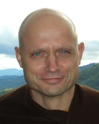

10. Reading from the draft biography: Ajahn Chah accepts his dying father’s request to stay as a monk for life. Read by Ajahn Pasanno. [Parents] [Monastic life/Motivation] [Sickness] [Death] [Ajahn Chah ] [Determination ] // [Mindfulness of body] [Spiritual urgency ] [Saṃsāra]
Reference: Stillness Flowing by Ajahn Jayasaro, p. 40
Quote: “I dedicate my body and mind, my whole life, to the practice of the Lord Buddha’s teachings in their entirety. I will realize the truth in this lifetime … I will let go of everything and follow the teachings. No matter how much suffering and difficulty I have to endure I will persevere, otherwise there will be no end to my doubts. I will make this life as even and continuous as a single day and night. I will abandon attachments to mind and body and follow the Buddha’s teachings until I know their truth for myself.” — Ajahn Chah. [Determination ] [Ardency] [Patience] [Doubt] [Continuity of mindfulness] [Relinquishment] [Knowledge and vision]
Reference: Stillness Flowing by Ajahn Jayasaro, p. 42
The singular quality of Ajahn Chah’s resolution. Reflection by Ajahn Pasanno. [Determination ]
12. Reading from the draft biography: Ajahn Mun’s character and legacy. Read by Ajahn Pasanno. [Ajahn Mun ] [Thai Forest Tradition] [Ajahn Chah] // [Culture/Thailand] [Perception of a samaṇa] [Great disciples] [Ascetic practices] [Rains retreat] [Almsround] [Psychic powers] [Discernment] [Liberation] [History/Thai Buddhism]
Reference: Stillness Flowing by Ajahn Jayasaro, p. 52
Story: Ajahn Mun disappears after being appointed abbot. [Abbot] [Seclusion]
13. Reading from the draft biography: Ajahn Chah visits Ajahn Mun. Read by Ajahn Pasanno. [Ajahn Mun] [Tudong] [Ajahn Chah ] // [Relics] [Cleanliness] [Perception of a samaṇa] [Personal presence] [Vinaya] [Conscience and prudence] [Teaching Dhamma] [Knowing itself] [Nature of mind] [Conventions] [Unconditioned] [Faith]
Reference: Stillness Flowing by Ajahn Jayasaro, p. 54
7. Comment: The essence of Ajahn Chah’s teaching was virtue and Right View. [Teaching Dhamma] [Virtue] [Right View ] [Ajahn Chah] // [Meditation] [Mindfulness] [Concentration]
Reading: Stillness Flowing by Ajahn Jayasaro, p. 594-596: “Sammādiṭṭhi”
2. Reading: Stillness Flowing by Ajahn Jayasaro, p. 427 “Work is Dhamma Practice” Read by Ajahn Pasanno. [Ajahn Chah] [Work ] [Eightfold Path] // [Everyday life] [Aversion]
3. Reading from Stillness Flowing by Ajahn Jayasaro, pp. 19-20: The culture of Northeast Thailand. Read by Ajahn Pasanno. [Culture/Thailand ] [Geography/Thailand]
8. Reflection by Ajahn Pasanno: Ajahn Chah encouraged a mature faith in the Three Refuges. [Three Refuges ] [Faith] [Ajahn Chah] // [Buddha] [Dhamma] [Superstition]
Reading: Stillness Flowing by Ajahn Jayasaro, pp. 612-614.
Sutta: SN 22.87: “Whoever sees the Buddha sees the Dhamma.”
3.1. Reflection by Ajahn Ahiṃsako: Building foundations of community requires care and attention. [Saṅgha] [Community ] // [Vinaya] [Abhayagiri]
Quote: “Holding on with wisdom.” — Ajahn Jayasaro. [Ajahn Jayasaro] [Clinging] [Discernment]